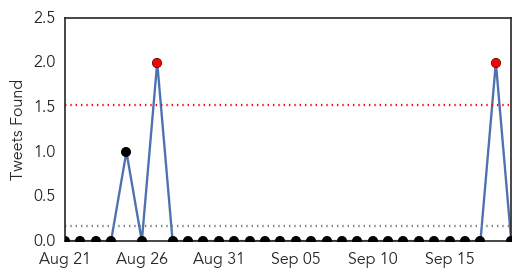
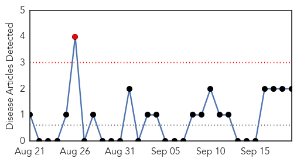

Influenza
30-Day Web Trend
6 alerts, 0 warnings

30-Day Twitter Trend
0 alerts, 0 warnings

Article Locations

Article Confidences
Top Articles:
- 0.999
- Fewer than half in USA get flu shots, CDC says
- 0.998
- Enterovirus D68 now affecting Pennsylvania children
- 0.998
- CDC urges all adults to get flu vaccination
- 0.994
- Two possible cases of Enterovirus-caused respiratory illnesses reported in central Oregon
- 0.993
- Enterovirus D68 confirmed in King County
- 0.990
- Predicting flu season severity is difficult
- 0.989
- Case of enterovirus D68 confirmed in Kent County
- 0.972
- CDC, Erie County health commissioner remind families not to forget flu vaccine
- 0.965
- CDC: 90% of kids who died last flu season didn't get vaccine
- 0.964
- Most Adults Nix Flu Shots But Rates Up for Children, Pregnant Women
- 0.960
- Don’t forget flu vaccine: CDC
- 0.959
- 90 percent of kids who died last flu season didn't get vaccine, CDC says
- 0.933
- Health officials urge Americans to get their flu vaccine
- 0.929
- Lexington Health Dept. offers free flu shots on brink of flu season
- 0.917
- CDC tells U.S. adults not to forget flu vaccine
- 0.907
- Healthy adults shouldn't skip flu vaccine, CDC says
- 0.905
- New Hampshire sending cases to be tested for Enterovirus-D68
- 0.901
- Hospitals Restrict Children’s Visits Because of Enterovirus 68 « CBS Denver
- 0.823
- Va. Shore school to close early Friday because of flu
- 0.820
- Enterovirus D68 preparations underway in Thunder Bay
- 0.804
- 90 percent of children who died from flu last year had not been vaccinated
- 0.633
- Pirbright Celebrates Advances in Research on Virus Diseases
- 0.572
- Ebola: FG To Provide Equipment For Tertiary Health Institutions
Top Tweets:
-
No tweets found for Sep 19, 2014
Swine Flu
30-Day Web Trend
1 alerts, 0 warnings

30-Day Twitter Trend
0 alerts, 0 warnings
Article Locations
Article Confidences

Top Articles:
Top Tweets:
-
No tweets found for Sep 19, 2014